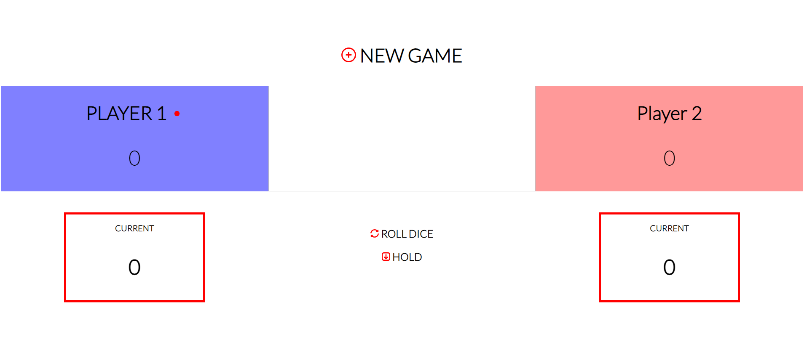
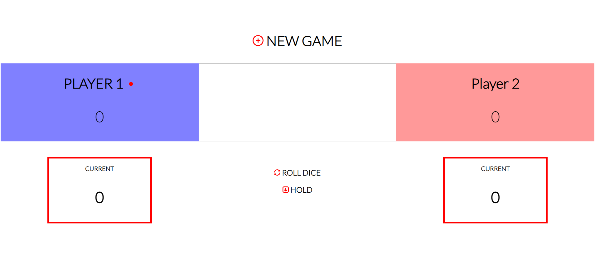

JOZEREAU J - Développeur web
Étant fonctionnaire titulaire, dans une démarche de reconversion, je suis actuellement étudiant sur la plateforme STUDI afin de devenir développeur web Full Stack.
J'ai appris l'utilisation de l'HyperText Markup Language, du cascading style sheets sans frameworks et avec le frameworks "Bootstrap".
En ce moment, je suis en train d'étudier l'usage du langage JavaScript. Je vous laisse découvrir ce curriculum vitae et surtout n'hésitez pas à me contacter.
Je suis actuellement à la recherche d'un stage en entreprise.
Expériences professionnels
- 2023 - Aujourd'hui / Développeur Web Full Stack JS
- Apprentisage de l'HTML
- Apprentisage du Javascript
- 2016 - Aujourd'hui agent PM dans la fonction publique territorial
- 2023 - Aujourd'hui : fonctionnaire au Coudray Montceaux
- 2020 - 2023 : fonctionnaire à Longjumeau
- 2018 - 2020 : fonctionnaire à Aulnay Sous Bois
- 2016 - 2018 : fonctionnaire à Vincennes
- 2015 - 2016 Agent de surveillance à Paris
- 2011 - 2015 Gendarme adjoint volontaire à Versailles
Diplôme
- Brevet des collèges
- Brevet d'études professionnels
Voici quelques sites qui ont été créés par mes soins :
 
